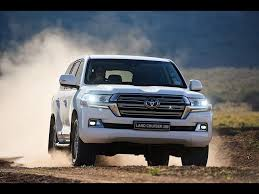

Overview
The Toyota Land Cruiser V8 is a full-size luxury SUV renowned for its unmatched reliability, powerful performance, and off-road capabilities. It combines ruggedness with luxury, making it a top choice for both city and adventure driving.
Key Features
- Engine: 4.5L V8 Diesel / 5.7L V8 Petrol
- Transmission: 6-speed Automatic / 8-speed Automatic
- Drive: Full-Time 4WD (Four-Wheel Drive)
- Horsepower: 232–381 hp (depending on variant)
- Fuel Type: Diesel / Petrol
- Seating Capacity: 7–8
- Interior: Leather Seats, Touchscreen Navigation, Rear Entertainment
- Safety: 10 Airbags, Lane Assist, Pre-Collision System, Crawl Control
Variants Available
- Land Cruiser VX
- Land Cruiser VX Limited
- Land Cruiser Sahara
- Land Cruiser Heritage Edition
Price Range (2025 Estimate)
Starts around PKR 7.5 Crore in Pakistan, or USD $85,000+ internationally, depending on model and specs.
Why People Love Land Cruiser
- Legendary off-road performance
- Powerful V8 engine options
- Highly durable and reliable
- Spacious and luxurious interior
- Great resale value